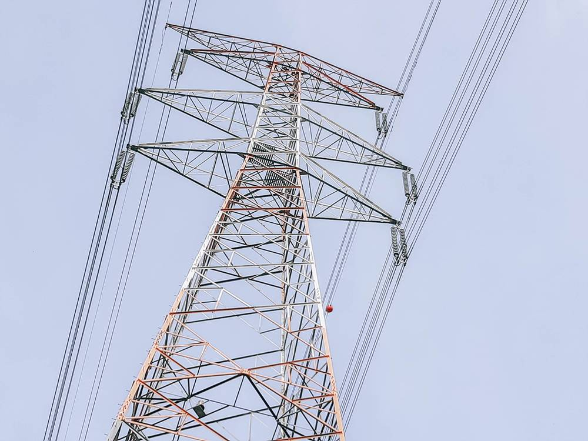

보령시 "서해안 에너지고속도로 신규 송전선로 원칙적 반대"…청라·미산·성주면은 345kV 3개 노선 모두 지나

철탑 270기·130기·230기 계획…탈석탄 지역 송전 여유 활용·지산지소·경과지 계통연계 우선권 요구
충남 보령시가 정부의 서해안 에너지고속도로 계획에 따라 지역을 지나게 될 신규 송전선로 건설에 원칙적으로 반대한다는 뜻을 공식화했다. 시는 13일 보령시지속가능발전협의회가 연 제29차 토론회에서 보령을 지나는 345kV 송전선로가 새만금~신서산(철탑 270기·121.6㎞), 새만금~청양(130기·79㎞), 군산~신천안(230기·103㎞) 등 3개 노선이라고 설명했다. 이 가운데 청라면·미산면·성주면은 세 노선의 경과지에 모두 들어 있어 주민 부담이 한곳에 몰린다는 우려가 크다. 시는 석탄화력발전으로 오랫동안 환경 부담을 진 만큼 탈석탄으로 생기는 송전 여유 용량과 기존 설비를 먼저 쓰고, 지역에서 만든 전기를 지역에서 쓰는 체계와 RE100 기업 유치로 풀어야 한다고 밝혔다. 건설이 불가피하다면 경과지역에 발전사업 계통연계 우선권을 주고, 주민 요구대로 지중화 우선 검토와 전 과정 주민 참여, 전기요금 지원·이익공유 확대가 필요하다는 입장이다.
시민에너지 관점
세 노선을 합치면 보령에만 철탑 630기·약 304㎞가 계획돼 있는데, 그 전기가 지역에 남기는 몫은 아직 정해진 것이 없다. 덴마크는 송전망과 풍력 단지 주변 주민에게 지분 참여와 보상 기금을 법으로 보장해 반대를 협력으로 바꿨다. 송전선로 없이는 전환이 안 된다는 주장도 맞지만, 경과지 주민이 발전소 지분과 계통 우선권을 갖는다면 부담은 소득이 된다. 정부와 한전은 입지선정위원회에 주민 소유 발전사업과 이익공유 기준을 함께 올려 놓고 노선을 논의해야 한다.
출처: 중부매일 2026-11-15 서성원 원문 보기
保寧市「西海岸エネルギー高速道路の新規送電線に原則反対」…青羅・嵋山・聖住面は345kV3路線すべてが通過
鉄塔270基・130基・230基の計画…脱石炭地域の送電余力活用・地産地消・経過地への系統連系優先権を要求
忠清南道保寧市が、政府の「西海岸エネルギー高速道路」計画に伴い地域を通る新規送電線の建設に原則として反対する立場を公式にした。市は13日、保寧市持続可能発展協議会が開いた第29回討論会で、保寧を通る345kV送電線はセマングム～新瑞山（鉄塔270基・121.6km）、セマングム～青陽（130基・79km）、群山～新天安（230基・103km）の3路線だと説明した。このうち青羅面・嵋山面・聖住面は3路線すべての経過地に含まれ、住民の負担が一か所に集中するとの懸念が大きい。市は石炭火力発電で長く環境負担を負ってきただけに、脱石炭で生じる送電の余裕容量と既存設備をまず使い、地域でつくった電気を地域で使う体制とRE100企業の誘致で解決すべきだとした。建設が避けられないなら、経過地域に発電事業の系統連系優先権を与え、住民の要求どおり地中化の優先検討、全過程への住民参加、電気料金支援・利益共有の拡大が必要だという立場だ。
市民エネルギーの視点
3路線を合わせると保寧だけで鉄塔630基・約304kmが計画されているが、その電気が地域に残す取り分はまだ何も決まっていない。デンマークは送電網や風力団地周辺の住民に持分参加と補償基金を法律で保障し、反対を協力に変えた。送電線なしに転換はできないという主張も正しいが、経過地の住民が発電所の持分と系統優先権を持てば、負担は所得になる。政府と韓国電力は、立地選定委員会に住民所有の発電事業と利益共有の基準を併せて載せ、路線を議論すべきだ。
出典: 중부매일 2026-11-15 서성원 原文を読む
保宁市：“原则上反对西海岸能源高速公路新建输电线路”…青罗、嵋山、圣住面三条345kV线路全部经过
计划建设铁塔270座、130座、230座…要求利用退煤地区输电余量、就地生产就地消费、给予途经地区并网优先权
忠清南道保宁市正式表明，原则上反对根据政府“西海岸能源高速公路”计划途经本地的新建输电线路。市政府13日在保宁市可持续发展协议会举办的第29次讨论会上介绍，途经保宁的345kV输电线路共有三条：新万金至新瑞山（铁塔270座、121.6公里）、新万金至青阳（130座、79公里）、群山至新天安（230座、103公里）。其中青罗面、嵋山面、圣住面三条线路全部经过，居民担心负担集中在一处。市政府表示，保宁长期承受燃煤发电带来的环境负担，应优先利用退煤后腾出的输电余量和现有设施，并通过本地发电本地使用的体系和吸引RE100企业来解决问题。如果建设不可避免，则应给予途经地区发电项目并网优先权，并按照居民要求优先考虑地下化、保障全过程居民参与、扩大电费补贴和利益共享。
市民能源视角
三条线路合计，仅保宁就计划建设铁塔630座、约304公里，但这些电力能给当地留下什么，至今没有任何规定。丹麦以法律保障输电网和风电场周边居民的股权参与和补偿基金，把反对变成了合作。没有输电线路就无法转型，这一说法没错；但如果途经地区居民拥有电站股份和并网优先权，负担就能变成收入。政府和韩国电力公司应在选址委员会上把居民所有的发电项目和利益共享标准一并纳入，再讨论线路走向。
来源: 중부매일 2026-11-15 서성원 查看原文
Boryeong says it opposes new West Coast 'energy highway' power lines in principle; three 345kV routes cross the same townships
Plans call for 270, 130 and 230 towers; city wants spare post-coal grid capacity used first, local use of local power and grid priority for affected areas
Boryeong City in South Chungcheong has formally stated that it opposes, in principle, new transmission lines that would cross the city under the government's West Coast energy highway plan. At the 29th forum of the Boryeong Sustainable Development Council on the 13th, the city said three 345kV routes would pass through Boryeong: Saemangeum–Sinseosan (270 towers, 121.6km), Saemangeum–Cheongyang (130 towers, 79km) and Gunsan–Sincheonan (230 towers, 103km). Cheongna, Misan and Seongju townships lie on all three routes, raising fears that the burden will be concentrated on the same residents. Having borne the environmental cost of coal power for decades, the city argues that spare grid capacity freed up by the coal phase-out and existing facilities should be used first, alongside local consumption of locally generated power and attracting RE100 companies. If construction is unavoidable, it says affected areas should get priority grid access for generation projects, with undergrounding considered first, residents involved at every stage, and electricity-bill support and benefit-sharing expanded.
Citizen Energy View
Taken together, the three routes would put 630 towers and about 304km of lines in Boryeong alone, yet nothing has been settled on what that power leaves behind for the area. Denmark guarantees residents near grid lines and wind farms co-ownership rights and compensation funds by law, turning opposition into cooperation. It is true that the transition cannot happen without transmission lines, but if residents along the routes hold shares in power plants and priority grid access, the burden becomes income. The government and KEPCO should put resident-owned generation and benefit-sharing standards on the siting committee's table alongside the route debate.
Source: 중부매일 2026-11-15 서성원 Read the original